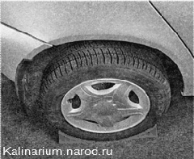
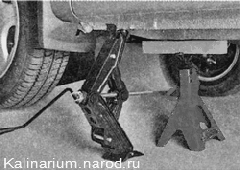
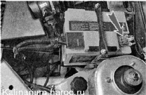

Подготовка автомобиля к техническому обслуживанию и ремонтуПеред проведением ТО и ремонта автомобиля необходимо выполнить несколько подготовительных операций. Подготовительные операции несложны, но от них зависит ваша безопасность, время, затрачиваемое на выполнение ТО и ремонт, а также качество работы. 1. Мойка автомобиля. Если имеется возможность, то перед работой автомобиль желательно вымыть снаружи. Причем если работа предстоит в моторном отсеке, то следует вымыть и его, а в случае ремонта подвески — вымыть автомобиль снизу. При мойке моторного отсека следует избегать попадания воды на колодки, датчики и исполнительные устройства системы впрыска топлива. Также следует избегать попадания воды в генератор и на стартер. В любом случае мойка моторного отсека должна производиться с обязательным отсоединением провода от отрицательного вывода аккумуляторной батареи. После мойки указанные выше детали и узлы необходимо тщательно просушить, продув струей сжатого воздуха. Эту операцию лучше выполнить на неавтоматической мойке. Здесь автомобиль вымоют вручную, предварительно обработав наружную поверхность кузова и моторный отсек специальными моющими составами, удалят грязь из арок колес и с днища кузова струей воды под высоким давлением с последующей сушкой. 2. Установка автомобиля: а) установка автомобиля на ровной горизонтальной площадке. Это может быть гараж с бетонным полом или другим прочным и ровным покрытием, горизонтальная площадка с твердым покрытием в помещении либо вне помещения (асфальт, бетон, деревянный настил). Твердое и ровное покрытие позволяет в случае необходимости приподнять любую часть автомобиля на домкрате и надежно установить на подставке (см. ниже п. 3). Для выполнения работ без вывешивания колес достаточно: — выключить зажигание; — зафиксировать автомобиль стояночным тормозом от самопроизвольного движения. При неисправности стояночного тормоза, а также перед ремонтом тормозной системы для фиксации автомобиля следует воспользоваться противооткатными упорами. ¦ Оставлять включенную передачу следует только в том случае, если в процессе работы не придется запускать двигатель или проворачивать коленчатый вал двигателя. В любом случае перед запуском двигателя, нажав педаль сцепления до упора, обязательно убедитесь в том, что рычаг переключения передач находится в нейтральном положении. • Не оставляйте ключ зажигания в салоне, так как возможно, что установленная на автомобиле охранная система (сигнализация) самопроизвольно перейдет в режим охраны и заблокирует замки дверей. Если есть необходимость в процессе работы оставить ключ в замке зажигания, то предварительно опустите стекло одной из дверей. б) установка автомобиля на смотровой яме или эстакаде. Если часть ремонтных операций приходится выполнять снизу автомобиля, то во многих случаях идеальным местом для работы (из доступных частному автовладельцу) будет гараж со смотровой канавой и бетонным полом. Перед тем как заезжать в такой гараж, канаву следует закрыть деревянными или стальными щитами, способными выдержать автомобиль. Остальные рекомендации такие же, как при установке автомобиля на ровную горизонтальную площадку (см. выше). Некоторые гаражные кооперативы имеют на своей территории ремонтную эстакаду, сваренную из металлоконструкций. Устанавливать домкрат или подставки под автомобиль на такой эстакаде, как правило, невозможно без специального настила из досок. Заезжать на эстакаду лучше под контролем помощника. в) установка автомобиля на склоне или на неровной площадке. Необходимость в этом может возникнуть, когда неисправность автомобиля приходится устранять в пути и нет возможности найти более подходящее место для ремонта (см. п. 2а и 26). Не следует ремонтировать автомобиль на траве, рассыпанной щебенке, песчаной почве и камнях (например, очень трудно найти гайку, упавшую в густую траву). Лучше попытаться отбуксировать или откатить автомобиль в другое место. Следует также избегать рыхлого грунта, особенно если предстоит воспользоваться домкратом и подставками. Если вынужденная остановка произошла на уклоне, то лучше попытаться скатить автомобиль с уклона, в противном случае под колеса необходимо положить противооткатные упоры, причем со стороны уклона желательно положить их несколько штук под разные колеса. В остальном следует выполнять те же рекомендации, что и при установке автомобиля на ровной площадке (см. выше). 3. Вывешивание автомобиля на домкрате и подставках. Такую операцию необходимо выполнять на ровной горизонтальной площадке с твердым покрытием. При работе на мягком или неровном грунте под домкрат и все подставки следует подложить прочные настилы размером не менее 30x30 см. Для изготовления настилов подойдет толстая доска. • Использовать подкати ой домкрат можно только на твердом основании, при этом ролики домкрата должны сохранять подвижность. • Поддомкрачивать автомобиль, стоящий на уклоне, допускается только для замены неисправного колеса, при условии надежной фиксации автомобиля от самопроизвольного перемещения. • Перед вывешиванием автомобиля на домкрате высадите пассажиров. Не садитесь в автомобиль, стоящий на домкрате, и не производите погрузку и выгрузку. • Перед выполнением ремонта на автомобиле с вывешенным колесом (или колесами) под силовые элементы кузова обязательно установите надежные подставки. • Следует учитывать, что в жаркую погоду разогретый на солнце асфальт становится мягким, он продавливается опорами подставок и основанием домкрата, в результате возможно падение установленного на них автомобиля. Для подъема автомобиля на домкрате необходимо: — выполнить все рекомендации п. 2 (см. выше); — установить противооткатные упоры под колесо, расположенное по диагонали с противоположной стороны автомобиля от вывешиваемого колеса. — штатный домкрат установить под порог. Верхняя площадка домкрата должна быть установлена под специальный кронштейн, приваренный к порогу кузова. — вращая ручку домкрата, поднять автомобиль (для многих работ достаточно, чтобы колесо лишь оторвалось от поверхности основания). — установить под силовые элементы кузова подставку (порог, лонжерон или поперечина кузова). Вращая ручку домкрата, опустите автомобиль на подставку. Аналогично можно вывесить остальные колеса автомобиля. 4. Очистка резьбовых соединений. При длительной эксплуатации автомобиля резьбовые соединения из-за коррозии, как правило, «прикипают» и покрываются слоем ржавчины. Особенно это касается деталей подвески, трансмиссии, наружных элементов тормозной системы и рулевого управления. Поэтому перед ремонтом все разбираемые резьбовые и крепежные соединения следует зачистить металлической щеткой и обработать проникающей смазкой в аэрозольной упаковке или, в крайнем случае, смочить керосином. Лучше, если такую работу выполнить заранее (от нескольких часов до суток), чтобы смазка успела проникнуть внутрь соединения. 5. Отключение аккумуляторной батареи от электрической сети автомобиля. Необходимость в такой операции может возникнуть: — при ремонте электрооборудования, на которое постоянно подается напряжение как при включенном, так и при выключенном зажигании (генератор, стартер, замок зажигания, система управления двигателем и т. п.); — при выполнении любого ремонта, если велика вероятность короткого замыкания в цепи электрооборудования ; — при постановке автомобиля на стоянку на длительный период (например, зимой); — при быстром разряде аккумуляторной батареи во время стоянки автомобиля из-за большой утечки тока через цепи электрооборудования (до устранения неисправности); — при обслуживании аккумуляторной батареи и в некоторых других случаях. • Отключайте аккумуляторную батарею только тогда, когда в этом есть необходимость, так как при этом из памяти ЭБУ удаляются коды неисправностей и все настройки, выработанные системой управления двигателем ( что затруднит проверку данной системы с помощью диагностического оборудования на СТО). ' При снятии аккумуляторной батареи всегда сначала отсоединяйте клемму провода с отрицательного вывода, а при подключении батареи первым подсоединяйте провод к положительному выводу. • Никогда не отсоединяйте аккумуляторную батарею при работающем двигателе. Скачки напряжения, возникающие при этом, повредят электронное оборудование. • Если автомобиль оборудован охранной системой и центральным замком, при отсоединении аккумуляторной батареи никогда не оставляйте ключ зажигания в салоне автомобиля. В некоторых охранных системах возможно самопроизвольное запирание замков дверей автомобиля при подсоединении аккумуляторной батареи. Для отключения аккумуляторной батареи от электрической сети автомобиля достаточно: — выключить зажигание; — накидным ключом на 10 мм ослабить затяжку гайки крепления клеммы провода на отрицательном выводе аккумуляторной батареи; — снять клемму с отрицательного вывода аккумуляторной батареи и отвести ее в сторону (чтобы она не касалась вывода). Если не удается снять клемму с вывода (мешает близко расположенная перегородка моторного отсека), ослабьте затяжку двух болтов колодки, крепящих наконечники проводов, и прижмите боковые провода к среднему проводу. Не забудьте после затянуть болты. Подсоединяем клемму провода к выводу батареи в обратной последовательности. Перед подсоединением аккумуляторной батареи необходимо убедиться в том, что зажигание выключено. |